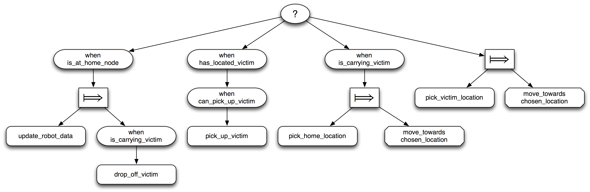
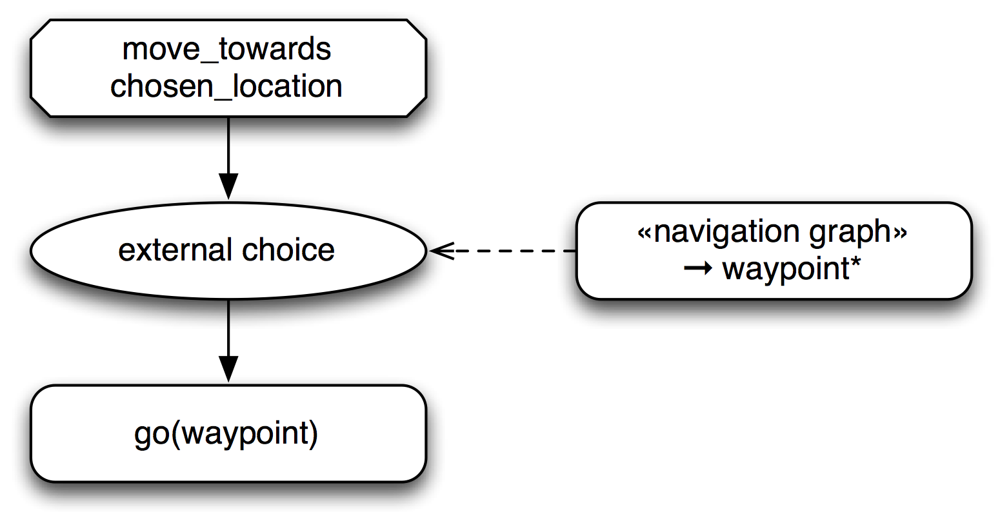
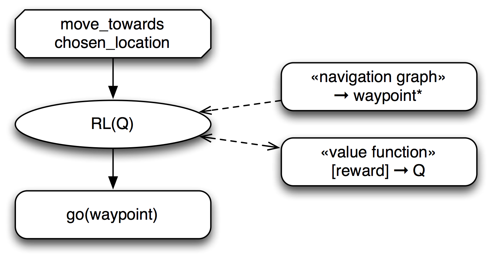

Behavior trees (BTs) are a technique for describing agent behaviors that was introduced to allow designers to script the behavior of non-player characters in computer games. In its simplest form a BT is a tree containing actions that are executed by an agent as leaf nodes, and choice nodes and sequence nodes as internal nodes. Choice nodes allow the choice between different courses of action whereas sequence nodes allow sequential execution of actions. Each BT is periodically activated by the control loop of its containing system (adopting a term commonly used in game engines, we say it is ticked) and returns a result indicating that its execution was either successful, that execution failed, or that it is still running and needs more time to continue. A choice node succeeds when any of its child nodes succeeds and fails when all of its child nodes have failed. A sequence node fails whenever one of its children fails and succeeds when all its children succeed. Both choice and sequence nodes return a running status whenever one of their children does.
Many implementations of BTs exist; most of them extend the basic node types with nodes such as decorators, internal nodes having a single child and modifying the execution behavior of that child, e.g., by ``negating’’ the result (from succeeded to failed and vice versa). Despite their simplicity, BTs allow surprisingly complex behaviors to be specified, but they suffer from a number of well-known limitations, for example: (1) Every action performed by the BT is immediately executed so that possibilites for off-line planning are limited. (2) It is difficult to implement state-based behaviors using BTs, since the child nodes of each node have to be specified in the tree which leads to clumsy specifications if different states require different behaviors.
To address these issues we have introduced Extended Behavior Trees (XBTs). XBTs extend behavior trees in several ways, among them:
-
The nodes return an indicator about the reward they obtained to their parent in addition to the execution status.
-
A state object is threaded through the activations of the nodes. All operations on the environment have to be mediated by the state, e.g., by being implemented as methods of the state object. States can be virtualized so that operations on the state simulate the expected behavior but do not change the real environment.
-
There is a node type external choice node that is similar to choice nodes but calls a function to generate its child nodes whenever it is ticked and not already running.
These extensions of behavior trees make it easy to specify state-based behaviors and they permit reinforcement-learning and offline-planning nodes. In addition, the operational semantics of XBTs is defined by a translation into SCEL and therefore node types that execute their children concurrently are easy to define.

Fig. \ref{fig:xbt-robot} shows an XBT for a simple rescue robot. The topmost node is a choice between four alternatives: The leftmost subtree checks whether the robot is in one of its home locations. In that case, it executes its child node, a sequence node that first updates the robot’s data and then drops off the victim. If this alternative fails, either because the robot is not in a home location or because it is not carrying a victim, the choice node proceeds to the second subtree, checks whether there is a victim in the current location and picks up the victim if possible. If this branch of the tree also fails and the robot is carrying a victim, it picks a home location and moves towards this location, otherwise it picks a new location where it expects to find a victim to rescue and moves towards that location.
Returning a result status of ``running’’ is similar to yielding in a coroutine: execution of the currently running branch of the XBT is suspended and control returns to the control loop; when the XBT is ticked again, it will resume execution starting with the suspended node. The possibility to fail and continue with the next choice leads to a convenient handling of situations where the outcomes of actions are not certain.

Moving towards a target location is one example of state-based
behavior: the direction to a target depends on the current position of
the robot. Fig. \ref{fig:xbt-nav} shows how external choice nodes can
address this situation: The state of the navigation graph provides a
sequence of waypoints that are possible targets for the next move of
the robot. The external choice node tries to perform a go
action to each of these nodes in turn, until one action succeeds. By
providing a sequence of waypoints, the system achieves a limited
amount of error tolerance: when some paths are blocked, the robot
tries to find alternative routes. But this solution is rather
limited: the different waypoints may lead to greatly different rewards
or costs, and the experience of the robot from previous rescue
missions is not used to improve future behavior since there is no
feedback from the XBT back to the navigation graph.

It is easy to incorporate individual learning into XBT-based controllers to add additional flexibility: Fig. \ref{fig:xbt-rel} shows the movement XBT for a robot that autonomously learns the navigation decisions for unknown terrain. This navigation system uses a RL(Q)-node, an external choice node that performs reinforcement learning using a Q-function. This node receives the set of all possible next waypoints from the navigation graph and uses an estimate of their quality (provided by the Q-function) to choose the order in which they are tried. Since the available Q-function is generally only an approximation of the real values obtained from the environment, the RL(Q) node uses the reward obtained by executing the go(waypoint) child node to update its estimate of the Q-function. In addition, the RL(Q) node occasionally performs exploration moves to waypoints that are not optimal according to the current estimate in order to obtain a better estimate. As can be seen by this example, it is straightforward to add individual learning behaviors to any choice node in an XBT.